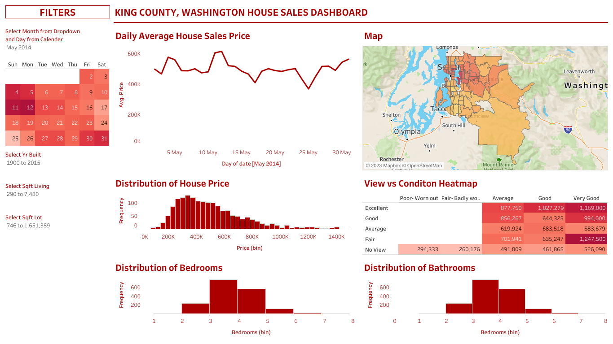

As a dedicated Data Analysis intern, I am passionate about deriving insights from data to drive informed decision making. With a strong foundation in data analytics and a commitment to continous learning, I am ready to tackle complex
challenges and contribute valuable solutions.


In this project, I delved into the latest COVID-19 data, harnessing the power of SQL and Microsoft SQL Server Management Studio to perform comprehensive data analysis. The goal was to derive meaningful insights from this critical dataset.
In this project, I harnessed the power of SQL and utilized Microsoft SQL Server Management Studio to execute comprehensive data cleaning and preprocessing for the NashvilleHousing dataset, a valuable resource for understanding the
real estate landscape in Nashville, Tennessee.

I successfully conducted extensive COVID_19 data analysis and visualization using Microsoft SQL Server Management Studio and Tableau, providing crucial insights into pandemic trends. This project showcased my prfociency in data management
and visualization as well as my ability to derive actionable insights from complex datasets.

In this project, I harnessed the power of Python to extract valuable information from Rotten Tomatoes, one of the most renowned movie review websites. The objective was to collect and analyze the ratings of the top movies.

Explore my latest project - an interactive dashboard for King County house sales. Analyze real estate trends with ease, thanks to user-friendly features like filtering, sorting, and rich visualizations. Technologies Used: Data Cleaning:
Microsoft SQL Server Management Studio Data Visualization: Tableau Discover the King County real estate market insights through this interactive dashboard.